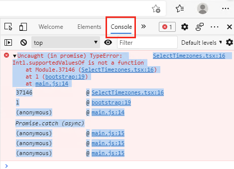
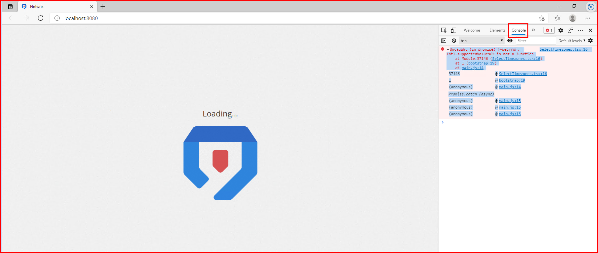

Symptoms
- The Netwrix Threat Manager Dashboard in Microsoft Edge stalls at the loading screen and does not proceed to the login screen.
- The following error is present in the Developer Tools Console panel:
- To access the panel, navigate to Settings (...) > More tools > Developer tools (or press CTRL + SHIFT + I) > Console tab:
- To access the panel, navigate to Settings (...) > More tools > Developer tools (or press CTRL + SHIFT + I) > Console tab:


Cause
The issue occurs because the version of Microsoft Edge being used is outdated.
Resolution
To resolve the issue, update Microsoft Edge to the latest version:
- In Microsoft Edge, navigate to the About window by selecting "..." > Settings > About.
- At the top of the window, click the button to update or check for updates.
NOTE: An offline installer for the latest version of Microsoft Edge is available here: